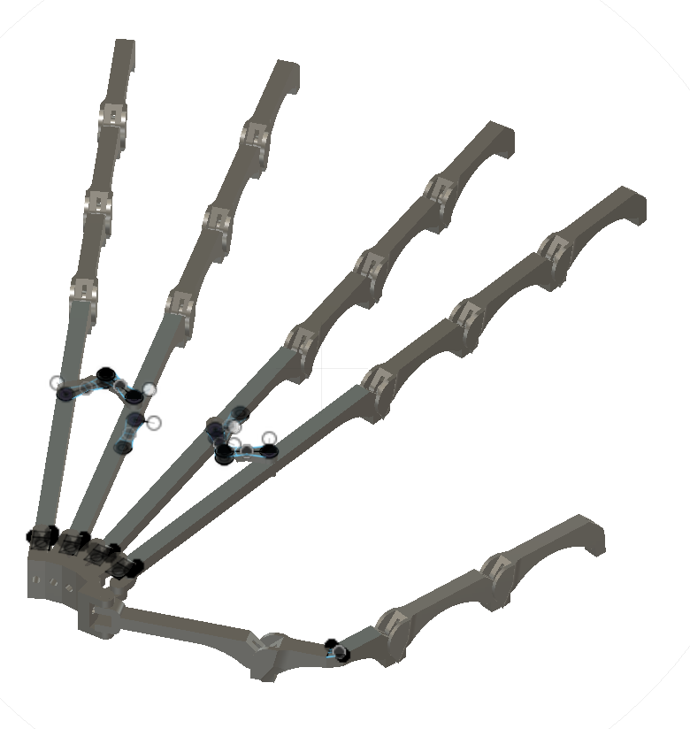
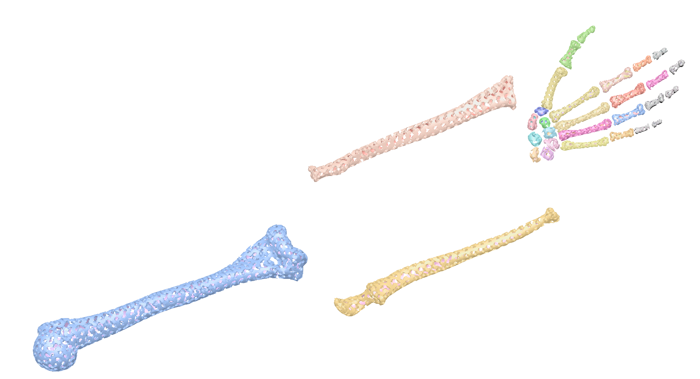
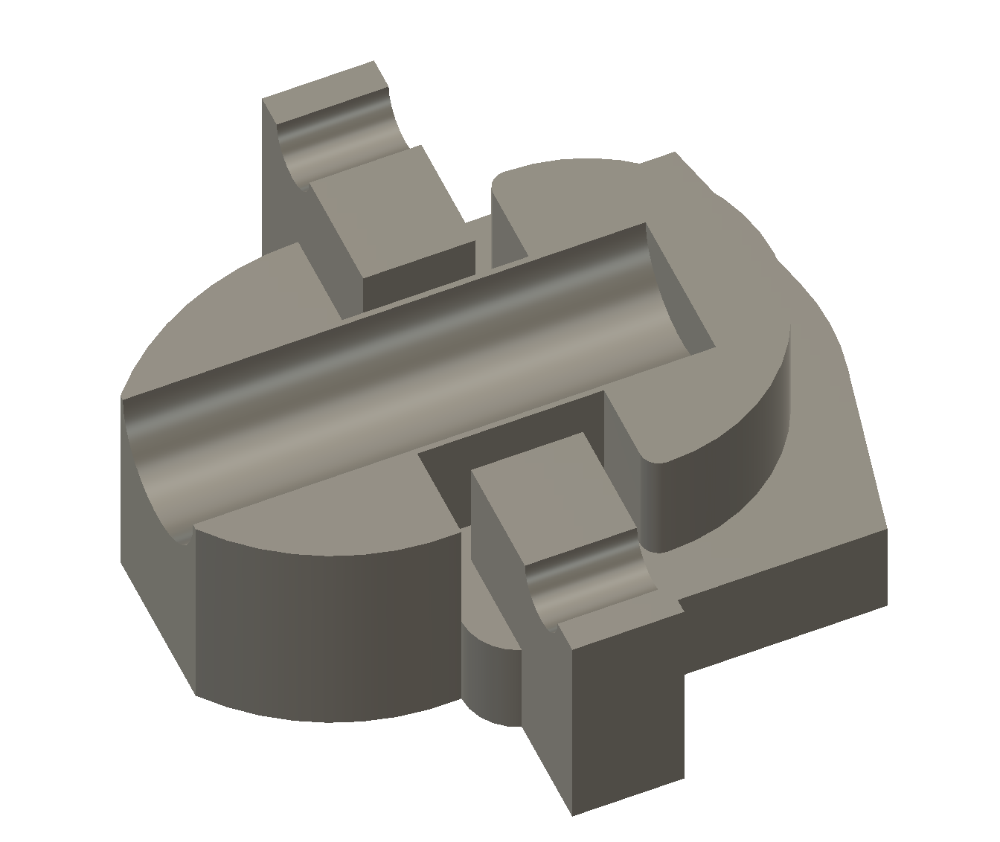

Robotic Hand
Design and control of an inexpensive, 3D printed robotic hand and arm.


Goals
There has been remarkable progress in robotic manipulation in recent years. I wanted to create a cheap, easily reproducible template for a robotic hand that could use a variety of actuation methods, letting me test and experiment with emerging text plus perception to motion models like NVIDIA GROOT.
Prototype Progression
- Prototype One
-
The first prototype established key baselines, including the relative success of servo-driven tendon routing and how well inexpensive parts could hold alignment under load.
 - Prototype Two
-
The second prototype was lighter and lower profile. I switched to rolling contact joints, using 0.2 mm fishing line as the contact surface instead of bulky axles. This reduced friction and simplified the assembly.
 - Prototype Three
-
The third prototype was the most ambitious and also the easiest to assemble. I scanned a human hand skeleton and connected each segment to mimic biological joints. This created a more realistic imitation of the forces involved, with the goal of inheriting the advantages built into human anatomy.

Design Themes
Rolling-Contact / Non-Traditional Finger Joints
I moved beyond simple pin joints to achieve smoother, more human-like motion and force transmission. The rolling-contact joints explored here draw from biological joints and precision mechanisms, emphasizing cam surfaces, rolling interfaces, and constrained motion over software compensation.
- Reduced backlash and wear versus revolute joints.
- Smoother torque transfer and more natural finger trajectories.
- Mechanical intelligence before software intelligence.
Tendon-Driven Finger Actuation Concepts
I investigated tendon / cable-driven fingers to move motors closer to the palm or forearm, lowering distal mass and increasing dexterity. This work focused on biomechanics-inspired routing and control coupling, rather than a servo-per-joint approach.
- Elasticity, hysteresis, and tension management in tendon routing.
- Tension control versus position control for stable grasping.
- Tradeoffs between underactuated and fully actuated fingers.
Force, Compliance, and Tactile Interaction
The goal was not just motion, but safe and expressive interaction. I prioritized compliance both in materials and in control to avoid brittle, rigid grasps.
- Passive compliance through joint design and material selection.
- Active compliance through impedance and admittance control.
- Hands are for interaction, not just positioning.
Manufacturing-Constrained Design (Real-World Buildability)
Every design decision was filtered through buildability. The project emphasized simple assemblies and serviceable parts that can be printed, tuned, and repaired without custom machining.
- 3D-printable joint geometries with realistic tolerances.
- Off-the-shelf bearings, tendons, and fasteners.
- Elegance includes manufacturability.
Prototype Videos
Early videos of the robotic hand in motion.